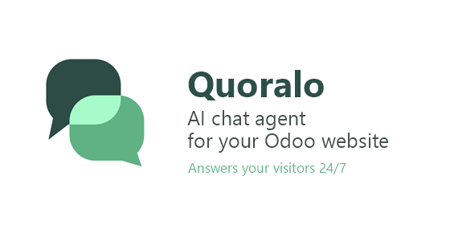

You need a Quoralo account and an agent. Odoo Online databases cannot install third-party modules: on Odoo Online, paste the Quoralo script tag in the website editor instead (Theme > Advanced > Code injection, in the </body> field).
The chat bubble is loaded from Quoralo, and your visitors' messages are processed by Quoralo. Before their first message, visitors are told that they are talking to an AI and how their messages are used. The module itself stores nothing in Odoo except the agent ID.
Questions about the module or your agent: contact@quoralo.com